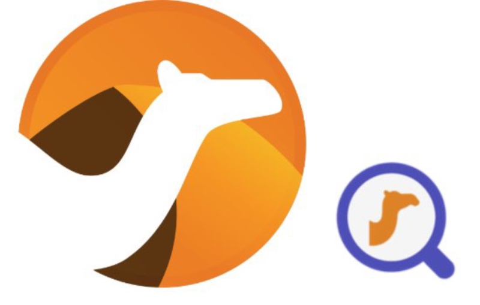
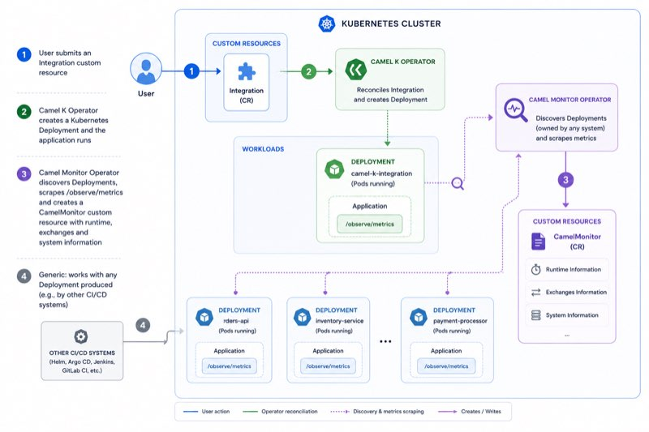
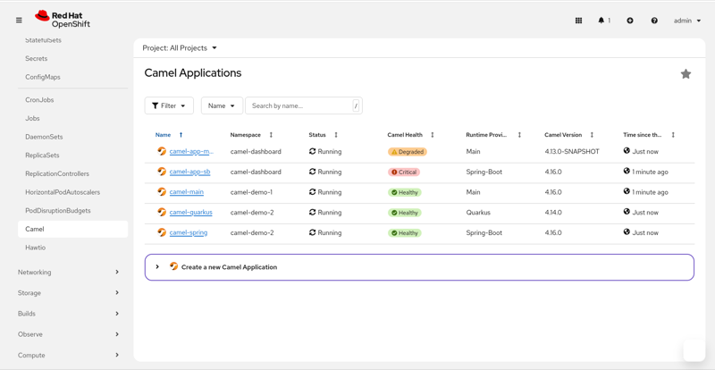

During the last years we’ve worked hard to bring cloud native operations capabilities for your Camel workloads on Kubernetes. Camel K was the first historic initiative and it gave us the possibility to experiment several features that we’ve decided to move off into a brand new project: Camel Monitor Operator (formerly known as Camel Dashboard operator).
Whilst Camel K will keep the focus and excel on the building and deploying part of a Camel application on the cloud, the goal of the new project is to focus on the monitoring part only. Separating the two major concerns (build/deploy and monitor) will give us the possibility to better deliver and maintain the projects. It will also give you the possibility to use both projects (or any of the two) in combination with other technologies (i.e., cicd, pipelines, …) and provide a full operational flexibility.
The Camel Monitor Operator was born from an experimental feature developed in Camel K (the Synthtetic Integrations) and is a great complement that will give you the possibility to maintain a full knowledge of what’s going on at every moment on your fleet of Camel applications running on the cloud. The original scope of this project is to provide a lightweight monitoring layer (we’ll see how this is exposed in a GUI dashboard) that can be further integrated with any advanced monitoring system automatically (for example, Prometheus).
Last important point to highlight is that the Camel Monitor Operator does not require Camel K to work, neither Camel K needs the Camel Monitor Operator as they offer orthogonal features.

NOTE: the Camel Monitor Operator is not part of the Apache Foundation at this moment.
Let’s explore how the two operators cooperate to give you greater control of your Camel application operations in the cloud.
Build and deploy via Camel K
The Camel K operator is the best and quickest choice to convert a Camel DSL into a running application in the cloud. The workflow is straightforward. The user creates an Integration custom resource containing the Camel DSL (any supported DSL) and any required configuration (properties, file mounting, resource tuning, …). The Camel K operator does what’s needed to convert such a Camel route into a running application converting it into a Kubernetes Deployment (or CronJob or KnativeService). Beside that, Camel K knows how to label the deployment resource for the Camel Monitor Operator to discover it out of the box.
There are several other features such as Self Managed Integrations, GitOps, Serverless, … and tunings you can configure. However, the final link between the Camel K operator and the Camel Monitor Operator is a deployment resource.
Build and deploy via any other CICD tool
Of course we know that Camel K is not the only way to build and deploy a Camel application in the cloud. For this reason, the Camel Monitor Operator was designed to pick any deployment resource, regardless who managed it. It can be a manual deployment or any CICD tool. What’s important is that such a deployment is labelled in a way the operator can easily discover it. So, if you’re planning to integrate a third party delivery tool you must make sure that any deployment resource is labelled with: camel.apache.org/monitor and the name you want to appear on the monitoring side.
Notice that you can dynamically add or remove such a label, but whichever is the deployment technology you have in place, it makes sense to include it automatically as part of the deployment process.
Monitor via Camel Monitor Operator
The Camel Monitor Operator is the consumer of the resources produced by any deployment technology you have in place. It discovers the applications via the camel.apache.org/monitor label (this can be configurable and changed if you need to). Once it discovers an application (Deployment, CronJob or any resource that finally provide a Deployment such as KnativeService) it creates a CamelMonitor custom resource (abbreviated cmon). Then it reconciles it periodically and scrape the applications metrics exposed in order to return the most important SLI you need to know in order to figure it out the health status of the application.
You can get those information via regular CLI:
kubectl get cmon
NAME INFO PHASE REPLICAS HEALTHY MONITORED MEMORY PRESSURE CPU PRESSURE EXCHANGE SLI LAST EXCHANGE
order-ms Quarkus - 3.30.8 (4.16.0) Running 1 True True True False Warning 1s
delivery-ms Spring-Boot - 3.4.3 (4.11.0) Running 2 True True False False Success 3s
emails-ms Quarkus - 3.30.8 (4.16.0) Paused 0 Unknown Unknown Success 61s
cart-ms Quarkus - 3.33.1 (4.18.0) Error 1 False True Error 0s
The CLI output is configured to provide a simple dashboard with the major KPIs expected to quickly figure it out if an application is up, if it has any kind of pressure or any potential queueing (via exchange SLI and last exchange parameter). The Camel Monitor custom resource has a wider set of information available providing details on each Pod running such as resources (cpu, memory, jvm info) and Camel Exchanges.
NOTE: the Camel Monitor Operator expects to scrape the metrics from the default endpoint provided by the
camel-observability-servicescomponent. If you provide this component, then, you don’t need to change any configuration. If you don’t, it gets a bit more complex as you have to provide the endpoints yourself and likely change the operator configuration accordingly.
Camel Dashboard UI (Openshift)
If you’re running your Camel on Openshift, then, a great visual tool that you can use is the Camel Dashboard. This is the GUI that leverages the CamelMonitor custom resource. As it’s based on some specific Openshift plugin technology, then it is only available for Openshift. In the official documentation you can find Helm charts to make a single installation and include all the tools at once.
The goal of the Camel Dashboard Console is to provide a graphical view of what we’ve described in the previous chapter. Here a snapshot illustrating what it looks like:

Of course, you can drill down and get more detailed information for each Camel application monitored. Another interesting use case is the integration with another plugin, Hawtio console plugin, which gives you the possibility to graphically inspect the Camel application from a JMX point of view.
NOTE: the Camel Dashboard UI which supports the latest Camel Monitor Operator is version 0.5.0.
Advanced monitoring via Prometheus stack integration
What we’ve seen so far belongs to the domain of a “dashboard”. This lightweight monitoring is good enough to cover a basic monitoring operations where we want to have a quick look at what it is happening on the fleet of Camel applications running in a cloud. If you want to perform advanced monitoring, then there are mature projects such as the Prometheus stack which you may already be using in your organization.
If the operator detects the presence of Prometheus installation on the cluster, then it will bridge automatically between the Camel application and the Prometheus stack in order to provide the following advanced features:
- Full application monitoring
- Full graphical dashboards
- Alert management
For each CamelMonitor (hence, each Camel application), the operator creates a PodMonitor, a GrafanaDashboard and a unique PrometheusRule (generic opinionated rule valid for all applications).
Conclusions
In this blog you’ve learnt how the Camel Monitor Operator is meant to fill the gap in the Kubernetes monitoring space. It provides a lightweight monitoring system (a dashboard) capable of discovering automatically Camel workloads and to link them with the advanced monitoring features provided by Prometheus stack out of the box.
The project is in an early stage and we’ll be very happy to receive feedback and new requirements in order to make it a great operations complement for your Camel applications running on the cloud.